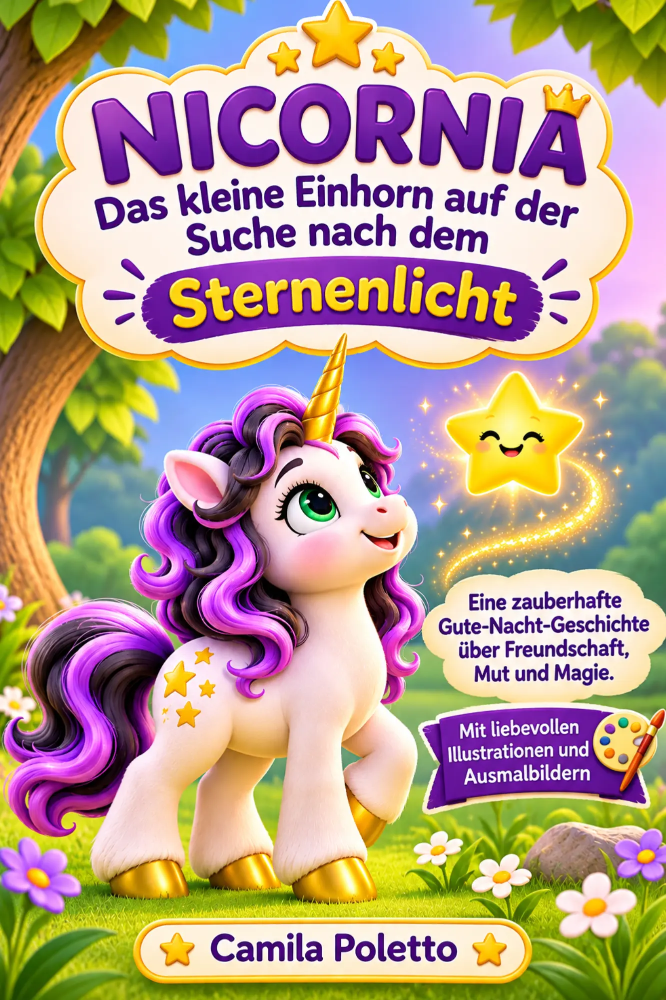

Gute-Nacht-Geschichte · Vorlesebuch · ab 3 Jahren
Nicornia – Das kleine Einhorn auf der Suche nach dem Sternenlicht
Eine zauberhafte Gute-Nacht-Geschichte über Freundschaft, Mut und Freundlichkeit – mit Ausmalbildern.
Tauche ein in eine zauberhafte Welt voller funkelnder Sterne, geheimnisvoller Wälder und kleiner Wunder! Eines Abends entdeckt das kleine Einhorn Nicornia einen traurigen Stern, der sein goldenes Licht verloren hat und den Weg nach Hause nicht mehr findet.
Entschlossen macht sich Nicornia mit ihrer lilafarbenen Mähne und dem goldenen Horn auf die Suche nach dem verlorenen Sternenlicht. Mit einem kleinen Hasen und einer weisen Eule entdeckt sie, dass Freundschaft, Hilfsbereitschaft und Mut selbst die dunkelsten Wege heller machen.
Eine Vorlesegeschichte ab 3 Jahren
- Eine liebevoll illustrierte Gute-Nacht-Geschichte und magisches Einhorn-Abenteuer
- Eine kindgerechte Geschichte über Freundschaft, Zusammenhalt, Mut und Freundlichkeit
- Zusätzliche Ausmalbilder für kreativen Malspaß
- Zum gemeinsamen Vorlesen vor dem Schlafengehen
Für Mädchen und Jungen ab 3 Jahren, die Einhörner, Märchen und magische Geschichten lieben – auch als Geschenk zum Geburtstag, zu Weihnachten oder einfach als besondere Überraschung.
Macht es euch gemeinsam gemütlich und entdeckt mit Nicornia eine magische Welt voller Fantasie!
Jetzt bei Amazon kaufenAls Amazon-Partnerin verdiene ich an qualifizierten Verkäufen.